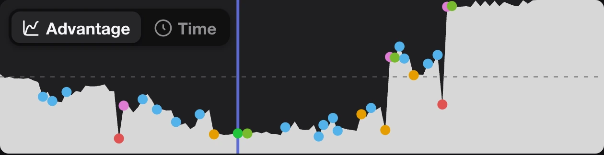
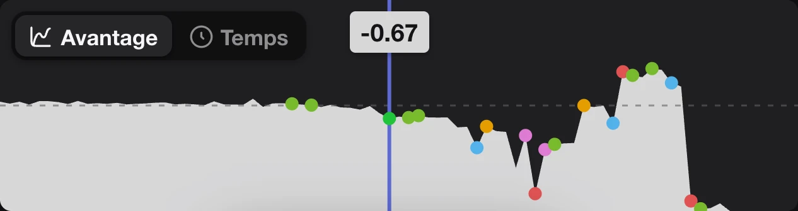
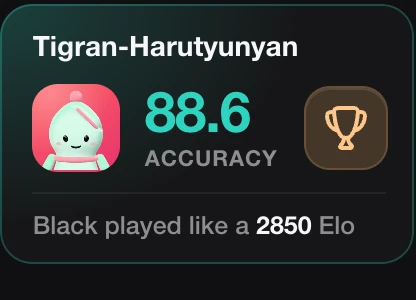
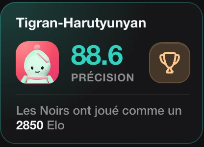
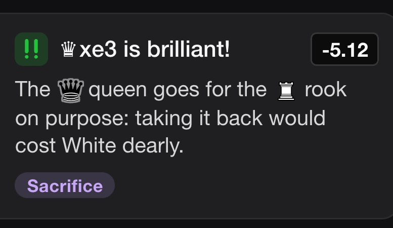
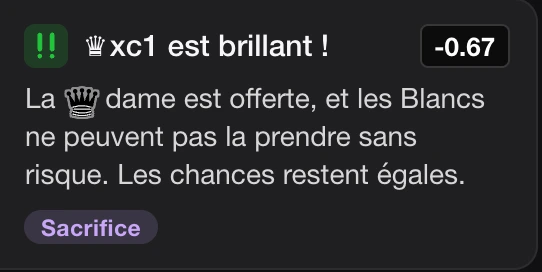

Not just an engine line: a coach tells you, in plain words, what each move did.
Pas juste une ligne de moteur : un coach vous dit, avec des mots simples, ce que chaque coup a fait.
lichess.org/2uAlbTma/black





